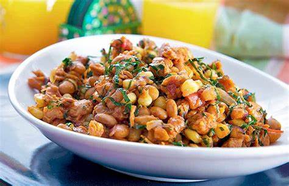

Githeri

This is a meal made out of maize and beans.
A Kenyan cuisine that is loved by many around the country. Best served with avocado.
Ingredients
- Maize (of any size depending on the number of people)
- Beans (of any size depending on the number of people)
- 2-3 Onions
- Salt
- Cooking Oil
- Coriander
Steps
- Mix the uncooked beans and maize together in one sufuria.
- Fill the sufuria with water till the mixture has been covered.
- Let the mixture cook till the mixture is evenly cooked.
- Add cooking oil, salt and onions and leave them to cook for around 30 mins to 1hr.
- Serve while hot and garnush with coriander.